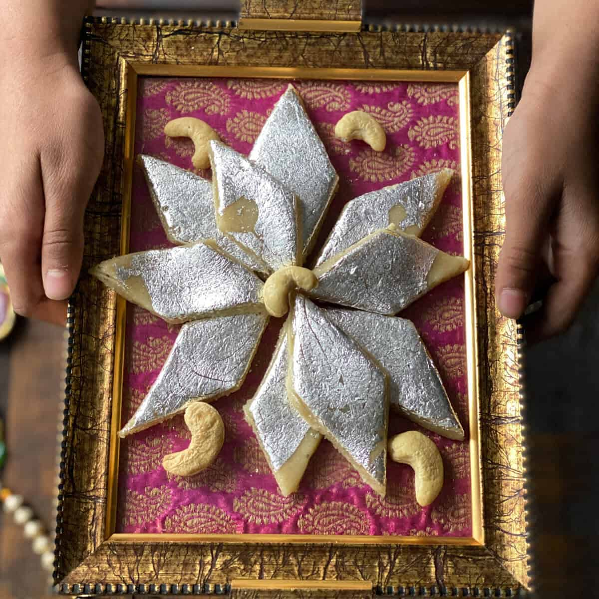

Kaju Katli

Take a bite of Kaju Katli and enjoy the short tour of heaven.
Kaju katli is a popular Indian sweet made from cashews. It is also known as kaju barfi.Kaju katli is commonly served during festivals and special occasions in India, such as Diwali, Eid, and weddings. It is a favorite among both adults and children and is often given as a gift to friends and family.
Ingredients 📝
- 2 cups cashews
- 1 cup sugar
- 1/2 cup water
- 1/4 teaspoon cardamom powder
- 1 tablespoon ghee or clarified butter
- Silver varq (optional)
Instructions 🥣
- Grind the cashews in a food processor or grinder until they are finely powdered.
- In a heavy-bottomed pan, mix together the sugar and water and heat over medium heat until the sugar dissolves.
- Add the cashew powder to the sugar syrup and stir well to combine.
- Add the cardamom powder and ghee and stir until the mixture thickens and starts to leave the sides of the pan.
- Remove the pan from the heat and transfer the mixture to a greased plate or surface.
- Allow the mixture to cool slightly and then knead it until it forms a smooth dough.
- Roll out the dough into a thin sheet using a rolling pin.
- Cut the sheet into diamond-shaped pieces using a sharp knife or cookie cutter.
- Place a small piece of silver varq on top of each diamond (if using).
- Allow the kaju katli to cool completely before serving or storing in an airtight container
Enjoy your delicious kaju katli!